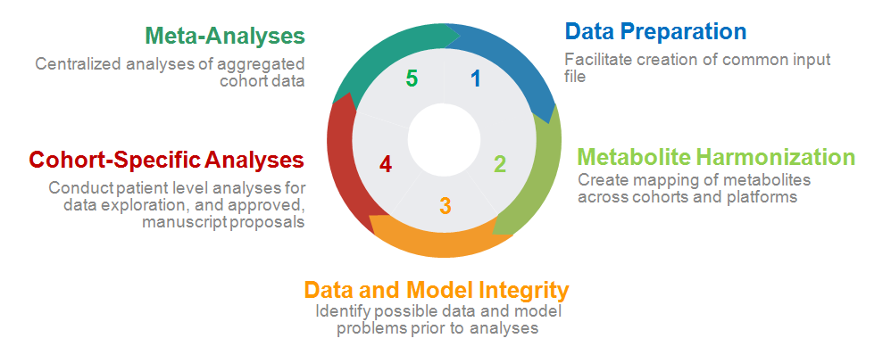

Overview
Comets Analytics serves as the infrastructure to facilitate and coordinate data analysis efforts. Each cycle of analyses consists of 5 steps described below to bundle multiple projects to minimize burden on cohort analytic resources.

This tutorial serves as a guide through this cycle. You can register for access to Comets Analytics using the instructions in 3.1 Registration and Account Set-up For a quick walk-through the cycle using the sample input file, see the [Quick Start]. Once you are ready to conduct your cohort-specific analyses, see the [Step-by-Step Guide]. For details, refer to the 4 Technical Details and [FAQ] for anwers to commonly asked questions.